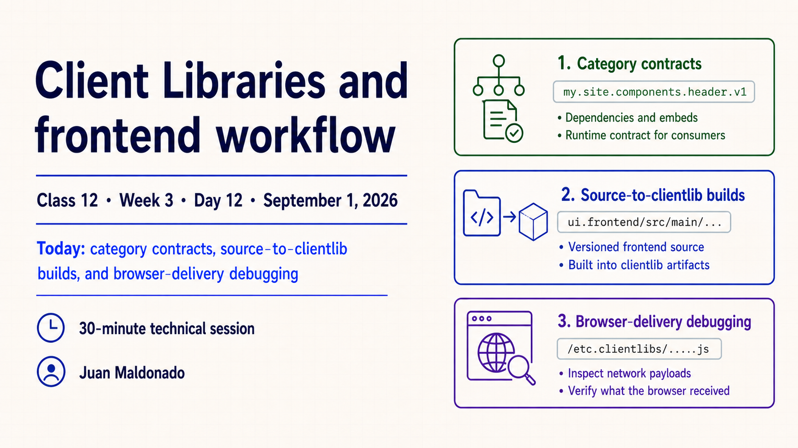
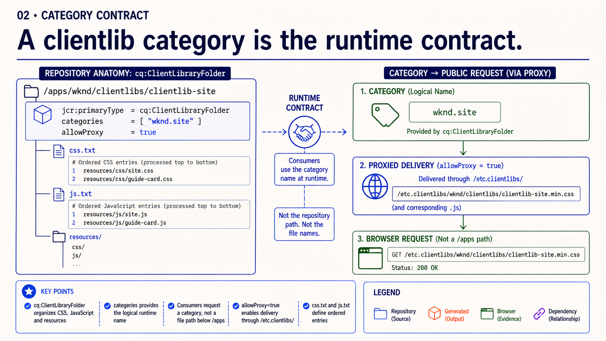
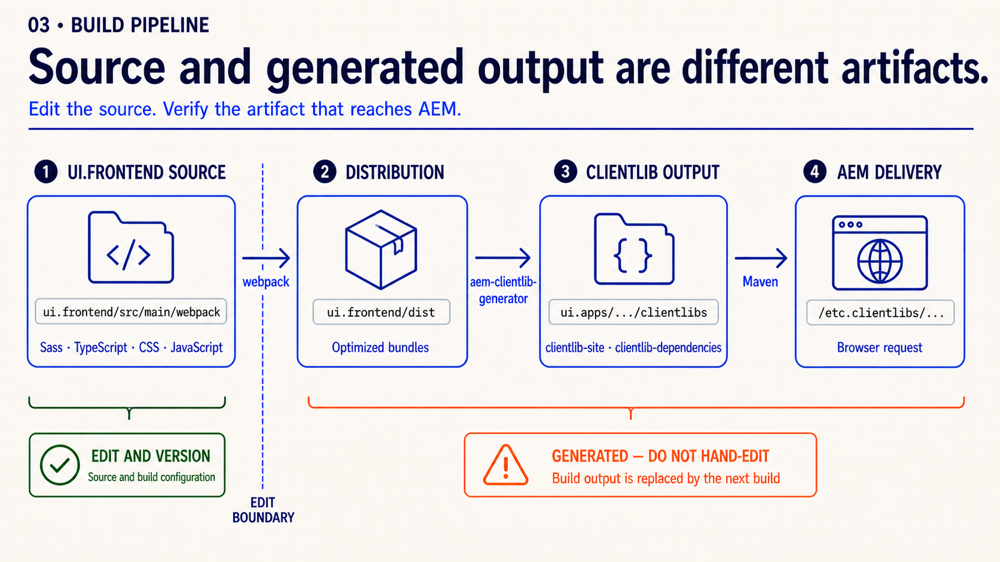
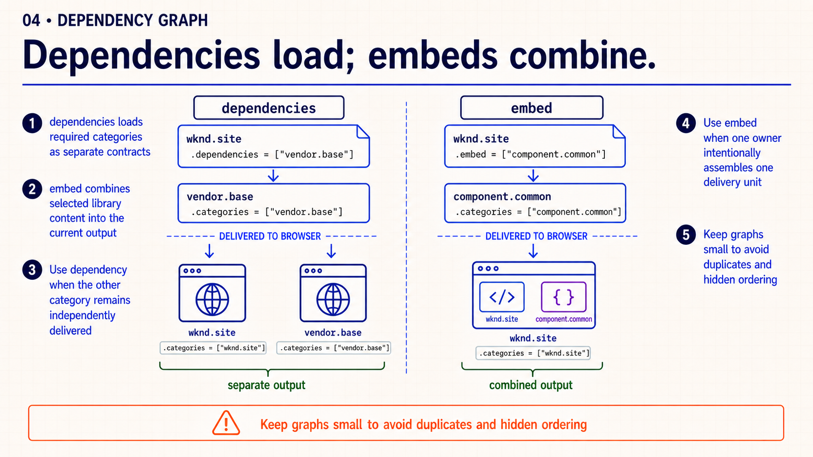
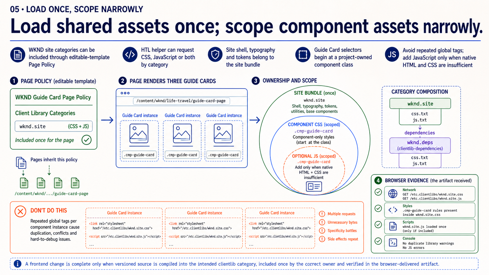
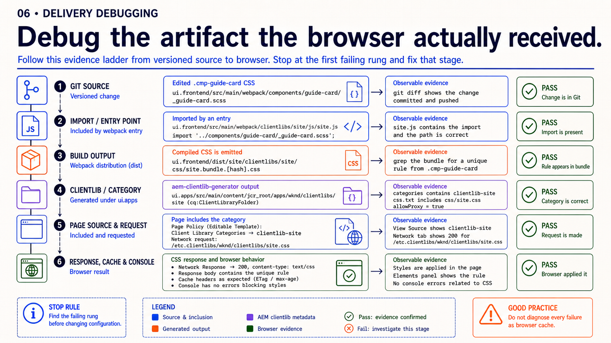
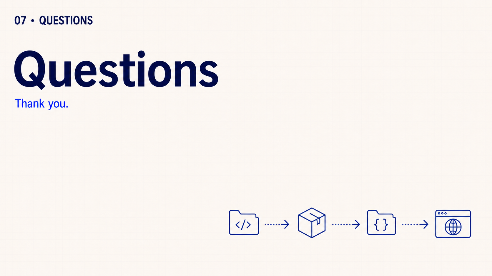

{kind=link}
Detailed presenter notes
- Present: identify the session, presenter, date and 30-minute scope.
- Preview: category contracts, source-to-clientlib builds and browser-delivery debugging.
Class 12 · Week 3 · Day 12 · September 1, 2026
Connect category contracts, generated clientlib artifacts and browser-delivery evidence.
A client library category is the runtime contract used by pages, dependencies and embeds. The repository folder holds the definition, while css.txt and js.txt define the ordered assets exposed through that category.
In the WKND workflow, editable source and generated output are different artifacts. Debugging therefore follows the change through the frontend build, clientlib generation, AEM packaging and the final browser response instead of stopping at the Git diff.
| Time | Activity | Facilitation |
|---|---|---|
| 0–3 | Opening | Preview category contracts, source-to-clientlib builds and browser-delivery debugging. |
| 3–11 | Slides 2–3 | Read clientlib anatomy and trace editable source to generated output. |
| 11–19 | Slides 4–5 | Contrast dependencies with embeds and assign one owner to each shared or component asset. |
| 19–26 | Slide 6 | Follow the evidence ladder from page include to response body and build source. |
| 26–30 | Slide 7 | Questions only; no review exercise or assignment handoff. |
Study each slide with its presenter notes, then copy it into PowerPoint, download its PNG or download the complete PPTX.







Acceptance: source ownership is clear, generated output is not hand-edited and the browser receives one intended asset path.
{kind=link}
{kind=link}
{kind=link}
{kind=link}
{kind=link}
{kind=link}